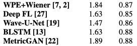

Audio is invisible. On its face, this might seem like the most obvious statement in the world - humans literally can't see sound (unless they have synesthesia...). But what I mean is this: humans are visual-dominant creatures and because we can't see audio, it’s easy to miss its importance - and its impact. This impact is felt in so many areas of media, but let's scope it just to spoken audio. Research has shown that people are more likely to trust information that comes to them as higher quality spoken audio.
Whether they're aware of it or not, people are more likely to consume content that sounds better, but the problem is - it's difficult and time-consuming to make spoken audio sound professional.
Instagram, Snapchat, Tiktok, and YouTube have revolutionized photo and video content creation - giving consumers access to filters, effects, and editing techniques that used to be the realm of professionals. The same revolution has not yet come for spoken audio.
There are plenty of DAW plugins and other products that can produce amazing results, but given the fact that maybe only 5-10% of my audience understood that 'DAW' stands for 'Digital Audio Workstation', it's clear that these products are out of the realm of your typical consumer. The vast majority of content that has professional-sounding audio is either recorded by professionals or by amateurs who have spent large amounts of time and money learning to record and engineer audio.
This is where SpeakUpAI comes in. We want every aspiring podcaster, YouTuber, MOOCs teacher, and every other creator of spoken audio content to be able to produce professional-sounding audio. With SpeakUpAI's state of the art machine learning technology, users can simply record spoken audio on their phone or tablet, upload it to our site, and our ML model will return an 'enhanced' version - denoised, dereverberated, normalized, EQ'd, etc, etc. - for them to download and use in whatever application they choose.
SpeakUpAI wants everyone to sound professional. We're hear to democratize audio.
We've intentionally sourced the same three datasets that were used in the creation of HiFi-GAN, the academic paper upon which we've based our research.
As the creators of the DAPS dataset describe it:
A dataset of professional production quality speech and corresponding aligned speech recorded on common consumer devices. [...] This dataset is a collection of aligned versions of professionally produced studio speech recordings and recordings of the same speech on common consumer devices (tablet and smartphone) in real world environments. It consists of 20 speakers (10 female and 10 male) reading 5 excerpts each from public domain books[...]
(They even have a paper they wrote about it!)
This is a dataset that is more or less tailor-made for our application - supervised learning for speech denoising. We have high-quality studio recordings of many different speakers (10 male and 10 female) for training. The unaltered audio (in .wav format) of these recordings acts as our output/target (or y), and we perform pre-processing and convolution on that same audio with our Noise and Impulse Response datasets to create our input (or X).
Additionally, we have the same twenty speakers reading the same material on different consumer devices in different real-world environments for testing. This really is perfect for our application, since it allows us to test generalization on never-before-seen examples while still maintaining conceptual continuity for subjective testing. These test examples also very closely mirror our intended use-case for our model - processing audio recorded across different devices in many different environments.
If our model generalizes well to this test set, but performs significantly worse on other real-world examples, it will give us a much clearer idea of whether we're overfitting on the 18 specific speakers in our training set. In turn, this will allow us to better tweak our data collection and pre-processing to make the model more robust.
Our "Noise" dataset is a collection of audio recordings focusing on what would typically be called background or ambient noise - the hisses, hums, and other persistent sounds present in almost all non-professional audio recordings. Because our audio targets are (intentionally) devoid of such noise, we use this dataset to add it back in and create our input data.
In this case, we've sourced the ACE Challenge dataset.
Another important aspect of audio recordings - and one that's particularly noticeable in professional recordings in particular - is the impulse response or 'room sound' of the space in which the recording is made. This is often referred to in the audio industry as 'reverb' (short for reverberation), and most professional voice-over, podcast, and other spoken media go through great lengths to minimize the audience's perception of the room in which the media was recorded (this can be referred to as making a recording 'dry').
Because our output audio from the DAPS set is already very dry, we create our inputs by convolving the output with a variety of impulse responses taken from the REVERB Challenge dataset.
As the authors explain:
Real-world audio recordings are often degraded by factors such as noise, reverberation, and equalization distortion. This paper introduces HiFi-GAN, a deep learning method to transform recorded speech to sound as though it had been recorded in a studio. We use an end-to-end feed-forward WaveNet architecture, trained with multi-scale adversarial discriminators in both the time domain and the time-frequency domain. It relies on the deep feature matching losses of the discriminators to improve the perceptual quality of enhanced speech. The proposed model generalizes well to new speakers, new speech content, and new environments. It significantly outperforms state-of-the-art baseline methods in both objective and subjective experiments.
Here, generator G includes a feed-forward WaveNet for speech enhancement, followed by a convolutional Postnet for cleanup. Discriminators evaluate the resulting waveform ($D_{W}$, at multiple resolutions) and mel-spectrogram ($D_{S}$).
On a practical level, we're using a PyTorch implementation of the HiFi-GAN model, forked from the awesome folks at w-transposed-x. As with any deep learning projects, our initial efforts went towards getting the model up and running (aka lots of troubleshooting), test runs, and hyperparameter tweaks based on performance.
We did initial testing on Google Colab, which is great for testing since it's an inexpensive platform. The disadvantage, however, is that users are limited to VMs with a single GPU.
So, once we got hyperparameters and performance to a functional level, we moved to Amazon EC2 (+ S3 for storage). EC2 instances have the advantage of being scalable - since our PyTorch implementation was built for distributed training on up to 4 GPUs, we spun up a 4GPU instance and started testing.
Currently, we're dealing with performance scaling issues between our single GPU training on Colab and the four GPU EC2.
Currently, work on HiFi-GAN is limited to audio recorded at 16khz sample rate. True high-fidelity audio is recorded at sample rates of 44.1khz or above. To this end, we've also implemented an Audio Super Resolution U-Net model, with the intention of training it on 44.1k audio downsampled to 16k.
Once we have this model trained, we can use it after HiFi-GAN in a pipeline to take raw speech audio, enhance/denoise it, and then upsample it to the desired high-fidelity sample rate.
Currently, we have our super resolution U-Net properly implemented in TensorFlow 2.x (it was originally implemented in 1.x, and the porting process was time-consuming), though further training work will wait as we optimize HiFi-GAN.
We take a small clip of audio from our DAPS dataset, recorded on a common consumer device (iPad) in a common location (office), and we run it through our HiFi-GAN archicture.
The following results are from HiFi-GAN after a very, very brief training (~1.5% of total steps from the original paper).
project-update-media/Week_12_raw_snippet.wav
project-update-media/Week_12_denoised_snippet.wav
As you can hear, almost 100% of the background noise (often described as 'hum' or - in this case - 'hiss') has been removed. There is still some obvious artifacting in the spoken voice, but remember - this is a preliminary with a VERY tiny fraction of the full training.

As you can see, the model is improving consistently with each increase in training. We'll be continuing to ramp up the training steps/epochs as we continue development - e.g. iron out some of the kinks with augmentation and distributed training - until our loss curves flatten, at which point we'll consider the results 'final' for this particular model iteration.


.wavThis is by no means comprehensive, but the following are some of the papers, repos, and products we researched while creating SpeakUpAI. Items marked with "***" are directly utilized in our research.